Goal
Build a robot that can see, talk, move safely, and run its high-level reasoning through a local Gemma 4-style model.
A visual learning booklet for building a small local-AI robot step by step, starting with a laptop-brain rover and branching into onboard, voice, and upgradeable hardware versions.
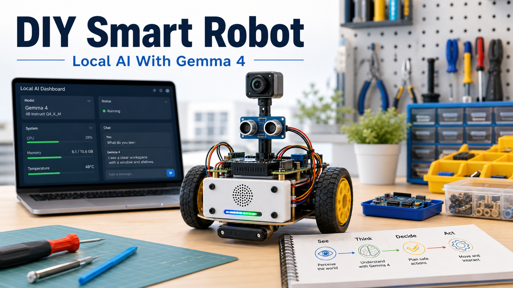
Build a robot that can see, talk, move safely, and run its high-level reasoning through a local Gemma 4-style model.
Keep real-time motor safety on a microcontroller. Use the local model for perception summaries, plans, and conversation.
Prototype slowly, on a desk or mat, with wheels lifted for the first motor tests.
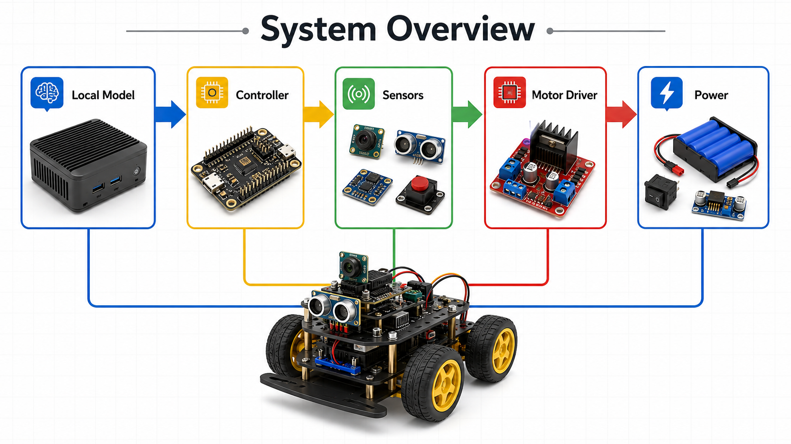
A laptop, mini PC, or onboard computer runs the local model and exposes a small local API.
The microcontroller reads sensors and turns simple commands such as forward, left, right, stop into motor signals.
The model never drives motors directly. Every motion command passes through validation and an emergency stop path.
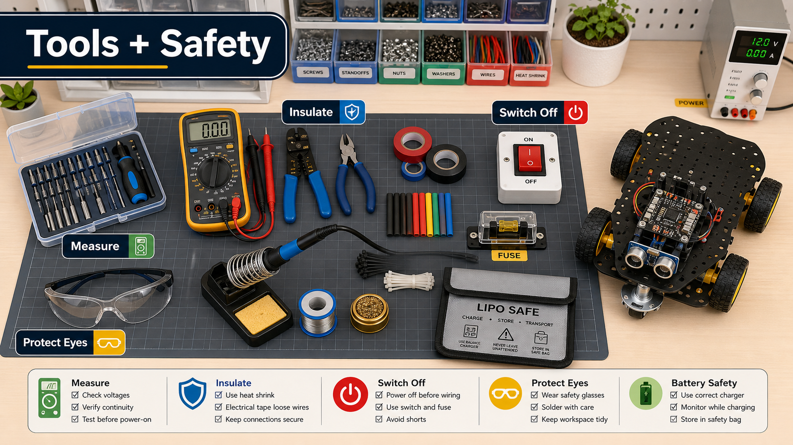
Use a screwdriver set, wire stripper, multimeter, heat-shrink, small pliers, and a soldering iron only when needed.
Add a physical switch and fuse. Confirm polarity before connecting motor drivers or regulators.
Work on a nonconductive mat. Keep metal scraps and loose screws away from powered boards.
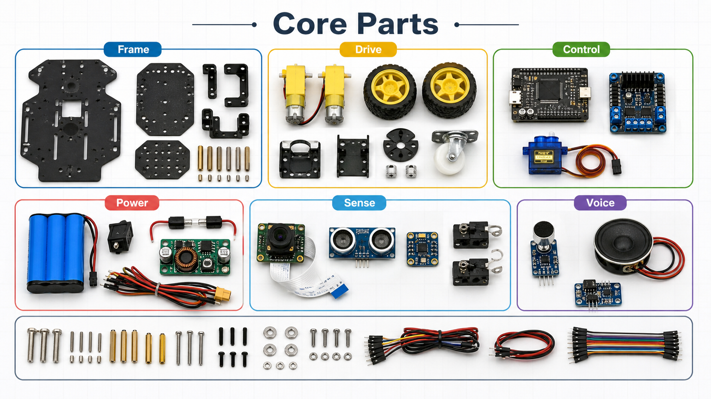
Chassis, two DC gear motors, wheels, caster, motor driver, microcontroller, battery, switch, regulator, and wires.
Add a camera and distance sensor first. Bumper switches are cheap and excellent for safety.
Microphone and speaker can wait until the rover can already move and stop reliably.
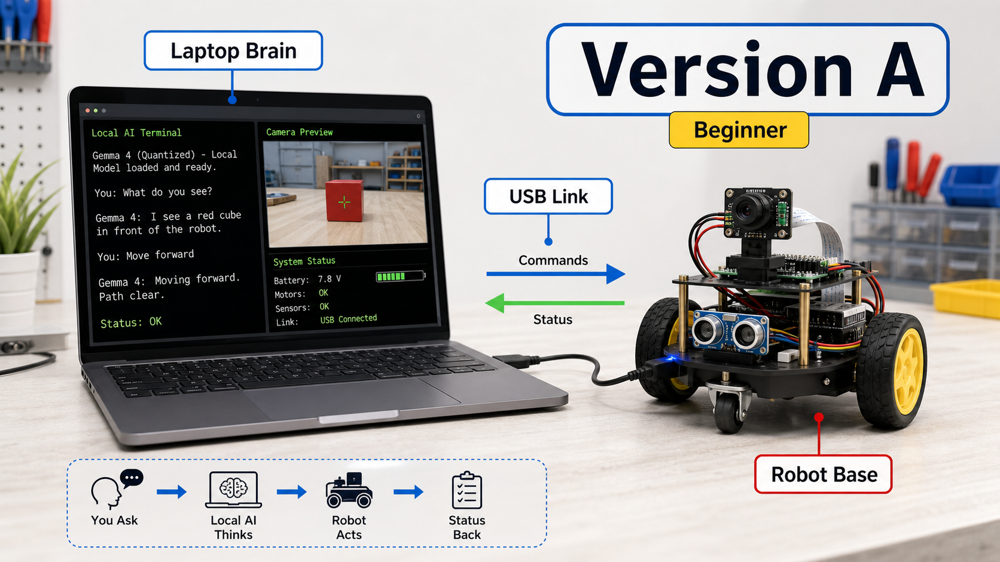
Learning control loops, prompt design, local inference, and sensor routing without fighting battery and thermal limits.
Use USB serial first. Send compact commands and receive compact status messages.
When the behavior works, move the model host onboard or switch to a faster local machine.
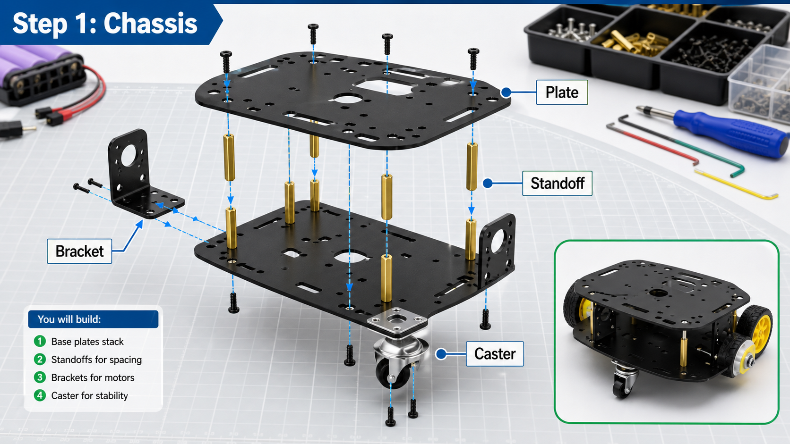
Dry-fit plates, standoffs, motor brackets, and caster before tightening screws.
Place boards where USB, power switch, and reset buttons remain reachable.
Keep the battery low and centered so the robot does not tip during turns.
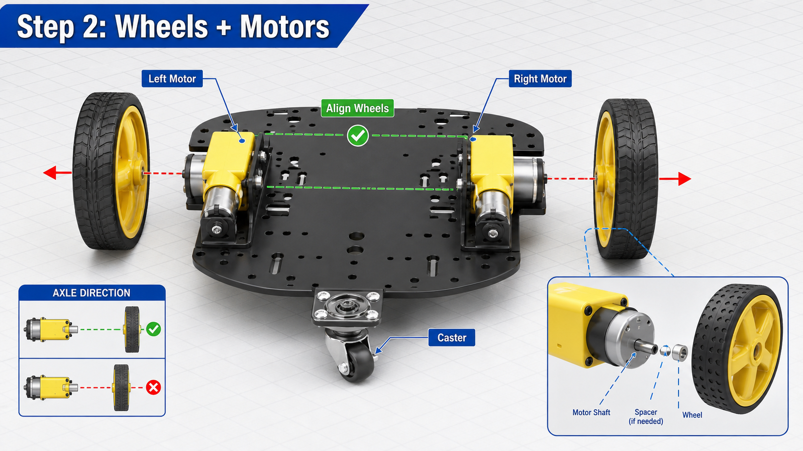
Make both wheels parallel and ensure the caster rotates freely.
Label left and right motors. If one spins backward, fix it in wiring or firmware, not in the model prompt.
Lift the wheels off the table and run a very low PWM motor test before placing the robot down.
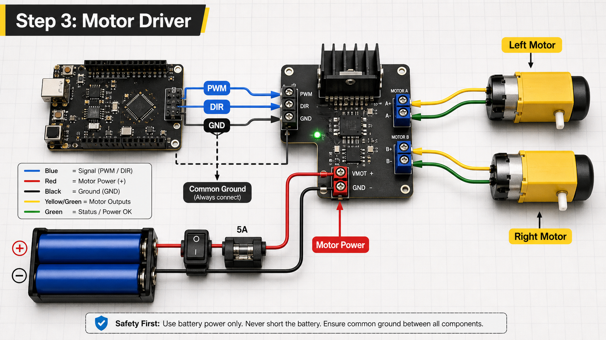
Use PWM for speed and direction pins for forward or reverse. Keep pin names documented.
Logic ground and motor power ground must share a reference, unless your driver explicitly isolates them.
Firmware should reject commands that exceed speed limits or ask for motion while the stop state is active.
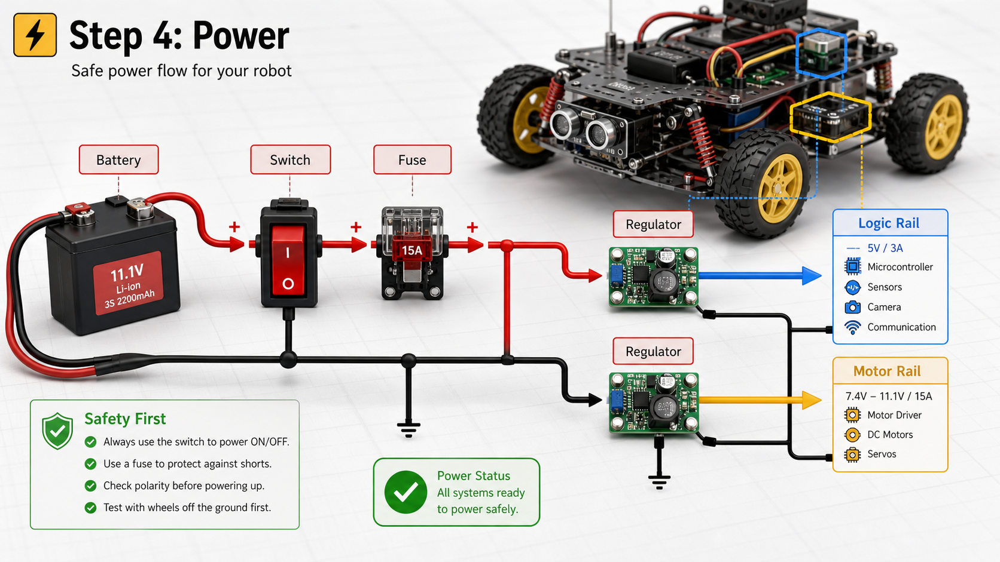
Separate noisy motor power from logic power through the right regulator and wiring layout.
Put the switch where you can reach it without touching wheels, gears, or exposed conductors.
Before connecting the controller, confirm output voltages with a multimeter.
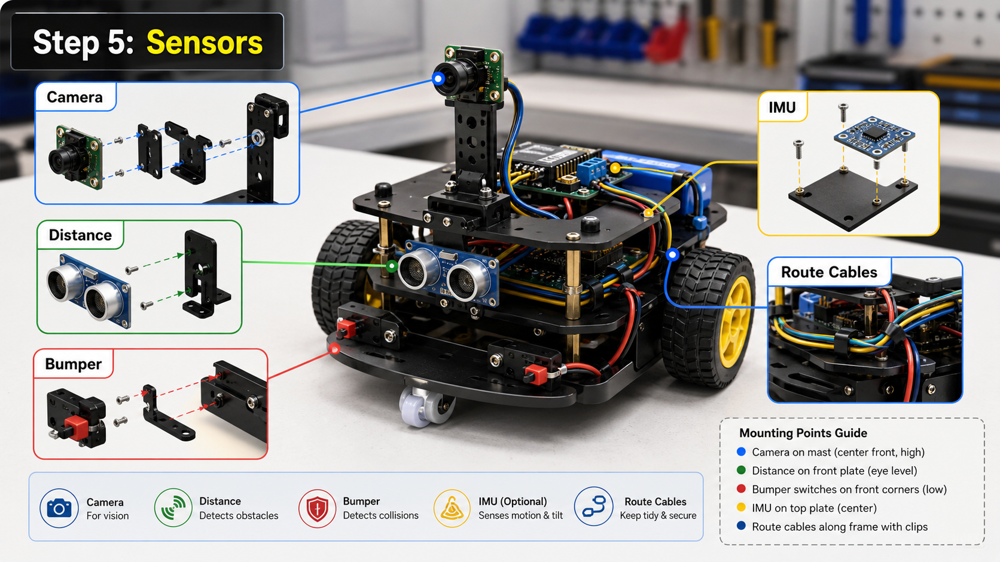
Mount the camera high enough to see the floor and near objects, but low enough to avoid wobble.
Use a distance sensor or bumper switch as a hard safety input independent of model reasoning.
Route cables away from wheels and leave service loops so boards can be removed for debugging.
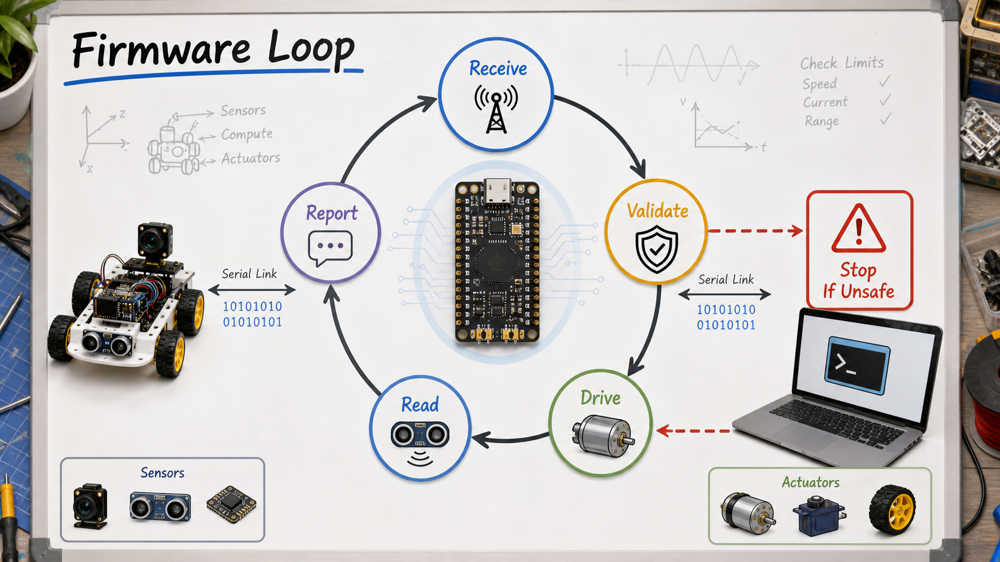
Use tiny messages such as speed, turn, duration, and stop. Return sensor distance, battery, and error state.
If commands stop arriving, the robot should stop automatically.
Obstacle, bumper, low-battery, and emergency-stop states must override model requests.
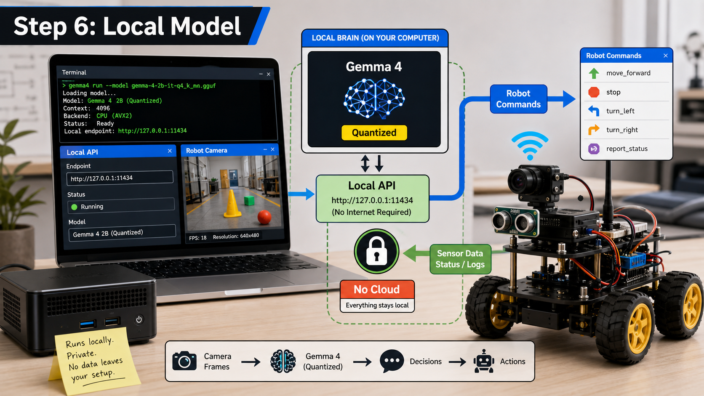
Use a laptop or mini PC first. Keep inference, logs, and prompts visible while debugging.
Choose a quantized model size your hardware can run responsively, then benchmark before adding motion.
Wrap model calls with a local service that accepts scene summaries and returns constrained robot intents.
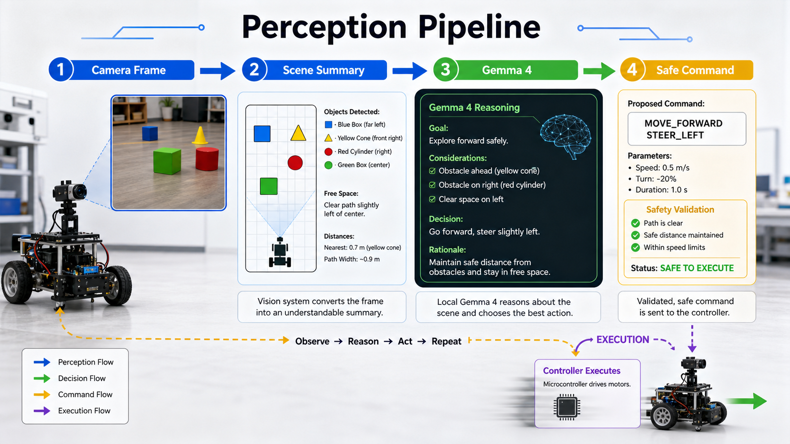
Capture a frame, detect simple objects, and estimate distance or direction.
Ask the model for a small decision, such as describe, stop, turn left, or follow target.
Translate model output into a fixed command schema before the controller sees it.
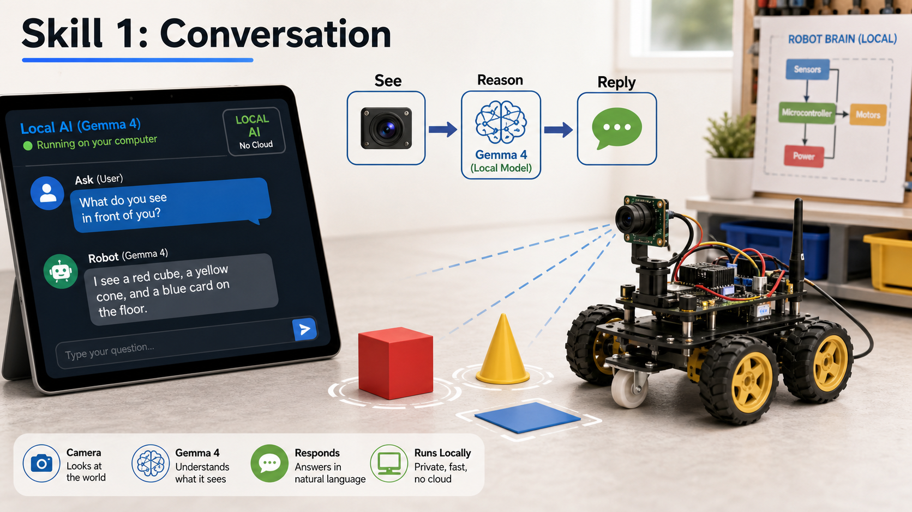
Ask for short factual answers about the current scene: colors, object counts, and safe movement advice.
Keep motors disabled while validating camera framing, latency, and response quality.
Save image timestamps, prompts, and answers so you can debug hallucinations or stale frames.
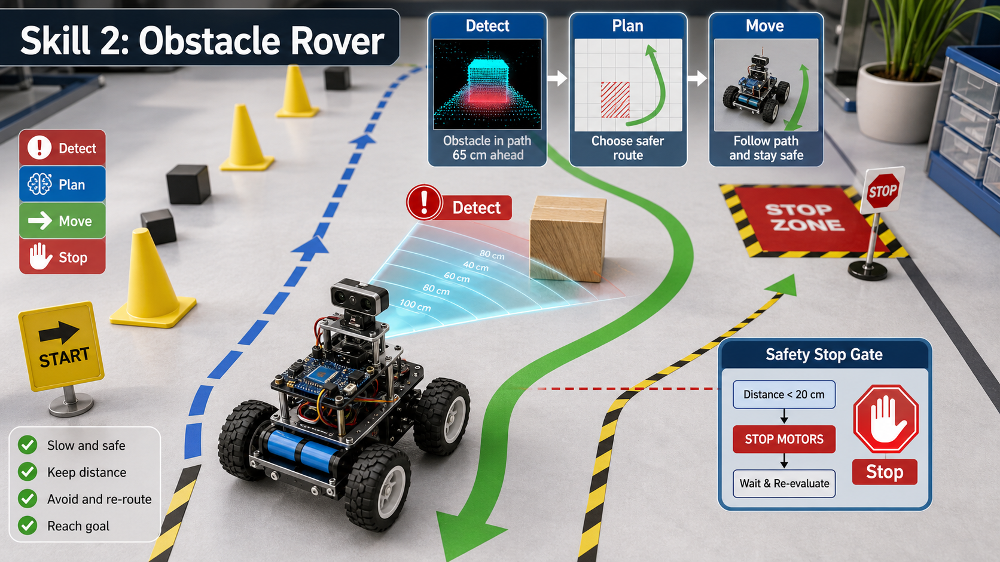
Distance readings should stop the robot even if the model thinks the path is clear.
Let the model choose between a few safe actions rather than free-form movement.
Use short timed movements, then stop, re-sense, and decide again.
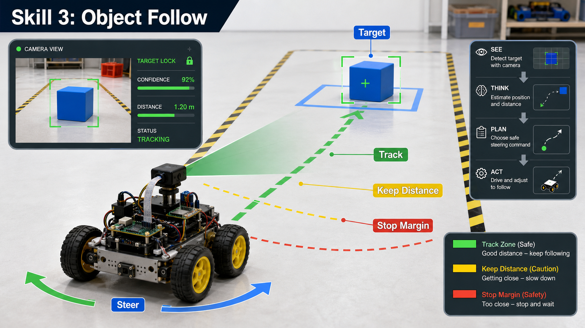
Use a bright object with a known color or marker for the first follow tests.
Define a minimum following distance and stop band before you start moving.
If the target disappears, stop and ask the model for a description rather than searching blindly.
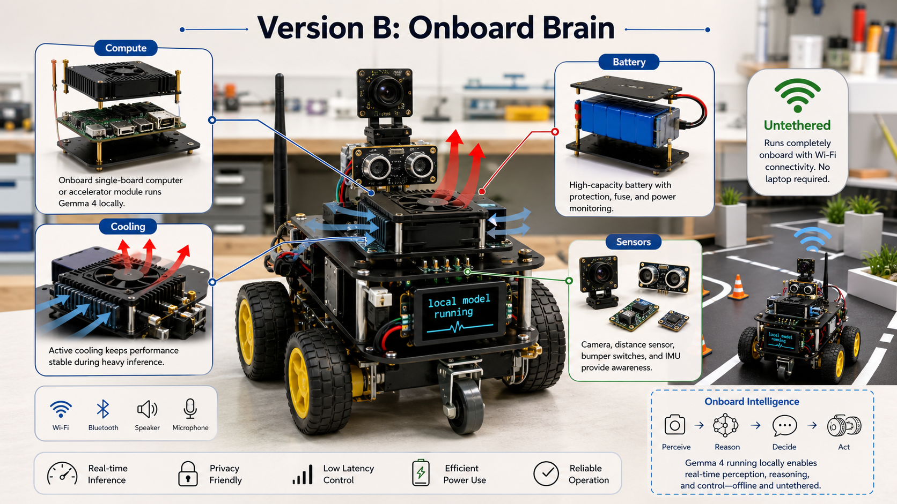
Use a Pi-class board for light control and a stronger local machine or accelerator for bigger models.
Plan airflow and temperature monitoring before enclosing the board.
Budget separate current for motors, sensors, controller, and compute. Measure runtime under load.
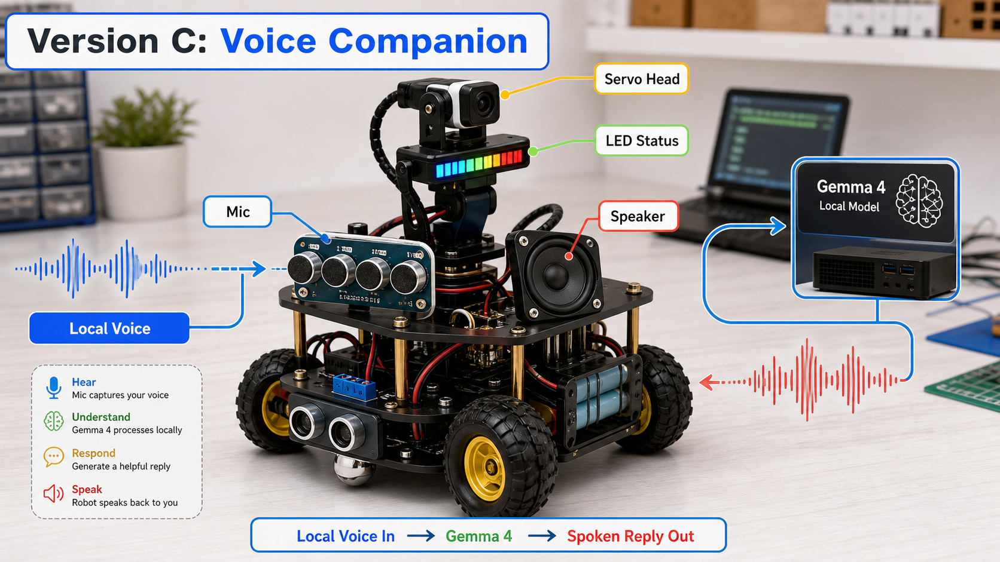
Add push-to-talk or a wake button before attempting always-on listening.
Use short spoken responses and a visible LED state so users know when the robot is listening or thinking.
Prefer local speech recognition and local model calls when the project goal is offline operation.
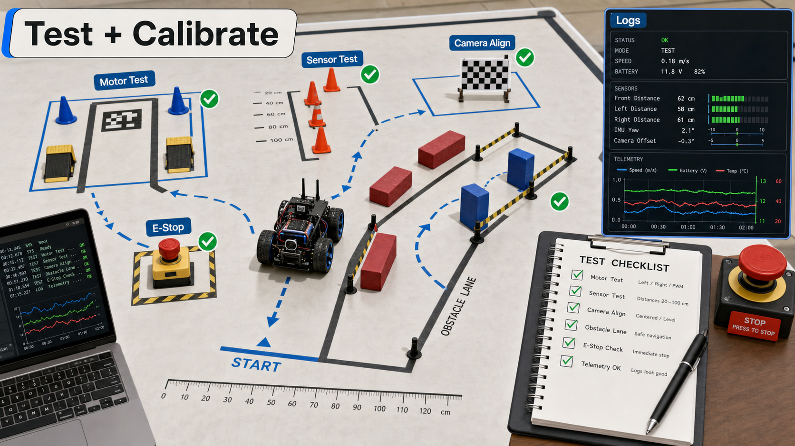
Verify stop behavior, motor direction, distance thresholds, camera orientation, and battery warning.
Use tape marks, simple obstacles, and repeatable distances so improvements are measurable.
Record commands, sensor values, model outputs, and controller rejects for every run.
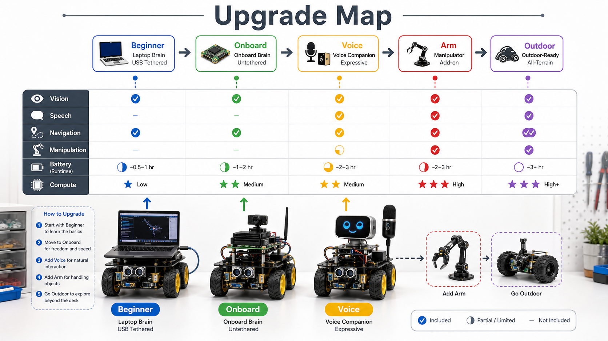
Tethered rover, onboard rover, voice companion, arm add-on, and outdoor-ready base are separate learning tracks.
Vision, speech, navigation, manipulation, and battery endurance each require different hardware tradeoffs.
Pick the smallest upgrade that unlocks the next skill, then return to the test course.
This booklet is a visual learning scaffold, not an electrical certification or final parts specification. Verify voltages, current limits, battery chemistry, motor-driver ratings, and local laws before building a moving device.